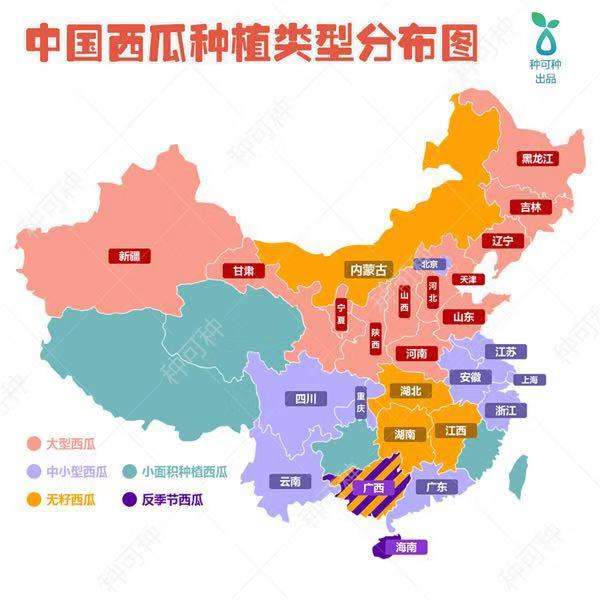

中国成为全球最大西瓜生产和消费国！是不是因为我国吃瓜群众太多了？
如今，我国西瓜种植面积超过3000万亩，估算产值超2万亿元…
根据联合国粮农组织FAO数据，2018年中国西瓜产量：
79,269,592吨
如果转换成西瓜汁呢？
以西瓜出汁率80%来计算
国家统计局的数据展示出2016年全国吃瓜大户们的表现。
其中，河南、山东西瓜产量一骑绝尘；新疆、湖北西瓜甜如网剧初恋；海南一年四季吃瓜不停歇。


来源：西瓜商情网
对比当季全国各大城市的西瓜价格，云南小伙伴吃瓜成本最高
来源：东方财富网
根据品种、生长环境的不同，西瓜也有“门派”之分。
这些日常瓜，你都认识吗？
来源：搜狐、西瓜商情网